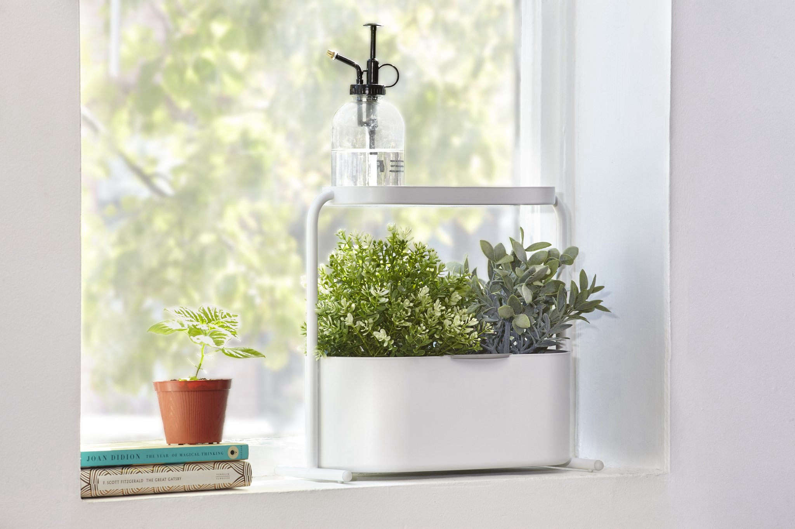

Eco-Friendly Products

Reusable Cotton Bag
Durable and stylish shopping bag made from 100% natural cotton. Perfect for groceries, daily errands, or even as a fashion accessory while helping to reduce single-use plastic waste.

Bamboo Straws
Eco-friendly and biodegradable bamboo straws that are safe for the environment and your health. Easy to clean, reusable, and perfect for smoothies, juices, and cocktails.

Kitchen Compost Bin
Compact kitchen compost bin designed to convert your food scraps into nutrient-rich compost. Helps reduce household waste while supporting sustainable gardening practices.

Beeswax Wraps
Reusable and natural beeswax wraps that keep food fresh without plastic. Great for wrapping sandwiches, covering bowls, or storing fruits and vegetables sustainably.

Steel Lunch Box
Durable, plastic-free stainless steel lunch box perfect for meals on the go. Keeps your food safe and fresh while reducing reliance on single-use containers.

Herb Planter Kit
Complete herb planter kit that allows you to grow fresh herbs at home, even in small spaces. Comes with seeds, soil, and pots, making sustainable cooking easy and fun.